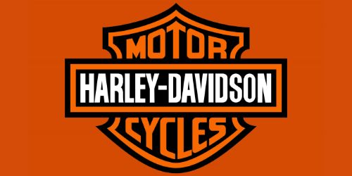
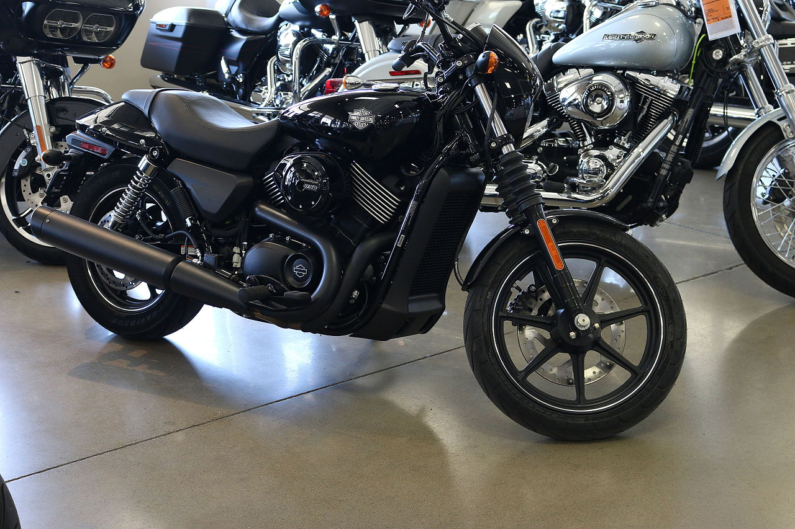
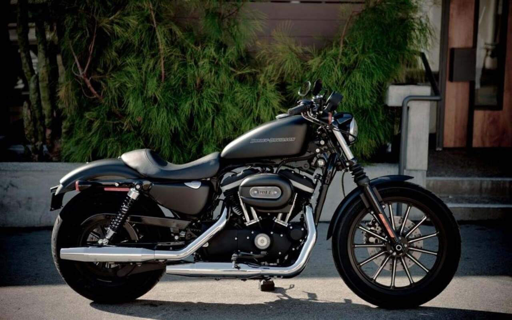
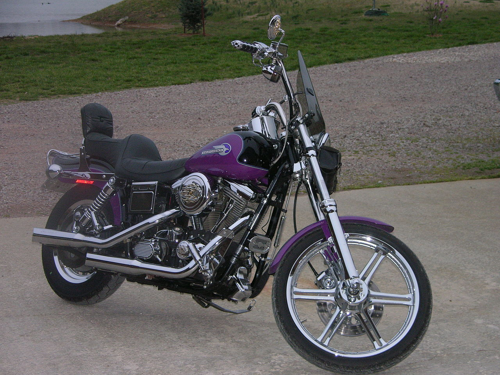
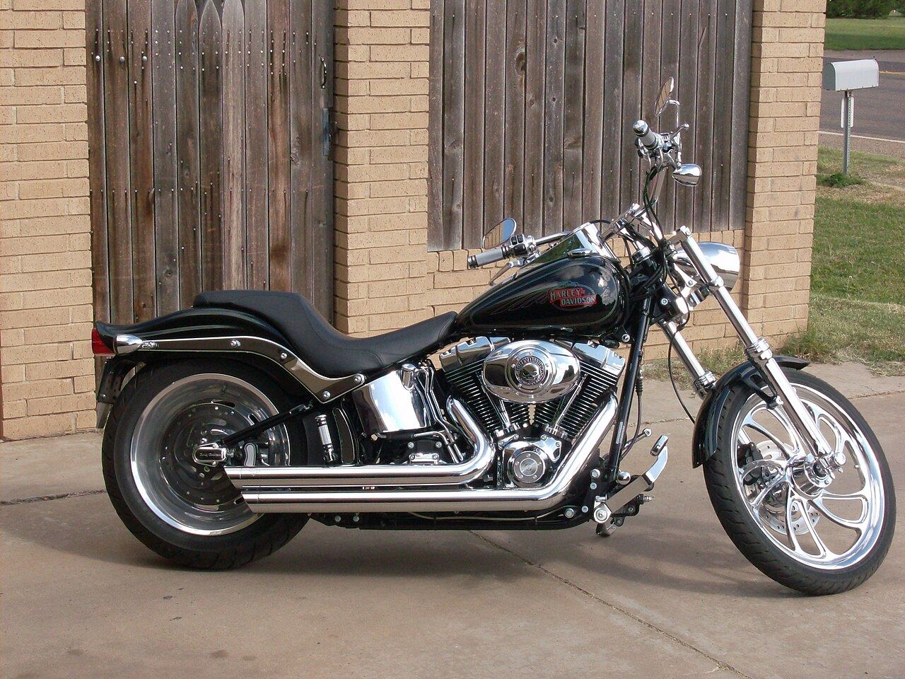
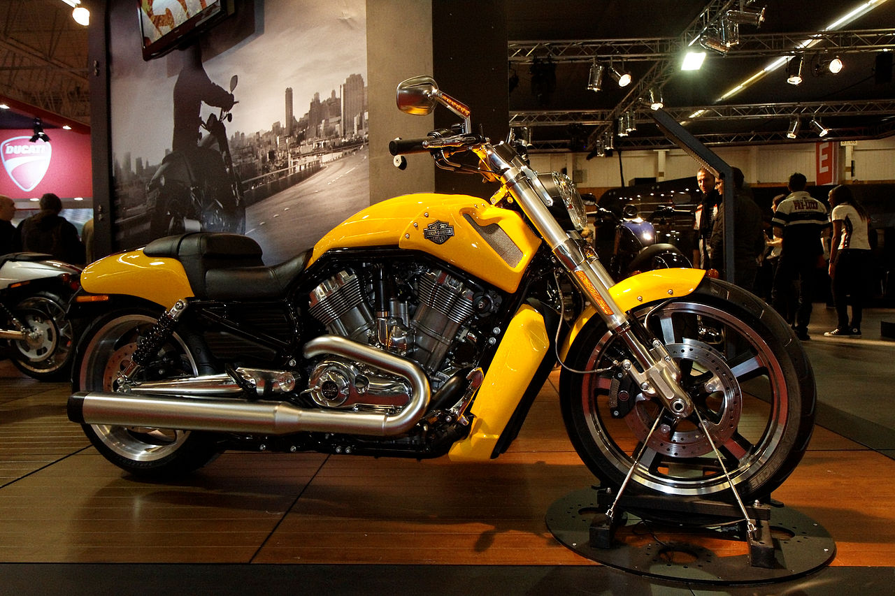

Harley-Davidson
Історія
На початку 1901 року Вільям Сільвестр Харлі (William Sylvester Harley), якому було всього 22 роки, розробив проект для маленького двигуна об'ємом 115 см 3 . Наступні два роки Харлі та його друг дитинства Артур Девідсон працювали над велосипедом із мотором, використовуючи гараж у будинку їхнього друга Генрі Мелка. Роботу було завершено до 1903 року з допомогою брата Артура. Після закінчення роботи юнаки зрозуміли, що їхнє творіння не в змозі підкорити навіть скромні пагорби Мілуокі без допомоги педалей. З цієї причини Харлі та Девідсон вирішили залишити свій велосипед із двигуном як перший, не дуже вдалий досвід.
Після цього негайно почалася робота над новим, сучаснішим мотоциклом. Цей перший «справжній» мотоцикл Harley-Davidson мав двигун об'ємом 405 см вагою трохи менше 13 кг. Нова просунута рама була аналогічна рамі мотоцикла 1903 року Milwaukee Merkel (сконструйованого Джозефом Меркелем, творцем Flying Merkel). Трубчаста рама та двигун більшого об'єму зробили нову модель Харлі-Девідсон вже не велосипедом із мотором, а мотоциклом у сучасному розумінні. У розробці нового двигуна допоміг інженер Оле Евінруд, один з піонерів американського моторобудування.
В 1906 Харлі і Девідсон побудували свою першу фабрику на Chestnut Street (пізніше вулиця була перейменована в Авеню Джуно). Сьогодні на цю адресу знаходиться штаб-квартира компанії. Перший завод на Авеню Джуно був дерев'яним будинком розміром 12 на 18 метрів. На цій «фабриці» першого року було зібрано вже 50 мотоциклів.
Усі мотоцикли, зроблені в 1905 і 1906 роках, були з одноциліндровими двигунами об'ємом 440 см3. У лютому 1907 року на виставці Чикаго був вперше показаний мотоцикл з двигуном V-Twin (880 см³) потужністю близько 7 кінських сил. Ці мотоцикли були майже вдвічі потужнішими за перші одноциліндрові. Максимальна швидкість становила близько 97 км/год. Між 1908 та 1909 продажі мотоциклів зросли з 450 штук до 1149.
У 1911 році було випущено вдосконалену модель двигуна V-twin. Новий двигун мав механічне керування впускним клапаном, на відміну від більш ранніх моделей, у яких впускний клапан відкривався за рахунок вакууму, що створюється в циліндрі. Обсяг нового двигуна було зменшено до 810 см³, але за рахунок більш досконалої системи газорозподілу потужність зросла майже вдвічі. Більшість мотоциклів, випущених після 1913, оснащувалися цим новим двигуном.
До 1914 Харлі-Девідсон став провідним виробником мотоциклів в США, обігнавши свого головного конкурента - компанію Indian. У 1914 році продажі досягли позначки 16 284 машин.
Брендування
Компанія проєктує, виготовляє продає суперважкі мотоцикли, призначені для їзди по шосе. Мотоцикли «Harley-Davidson» (також широко відомі як «Harley») мають характерний дизайн та характерний гучний вихлоп. За винятком сучасних моделей сімейства VRSC, поточний дизайн «Harley» відображає класичний стиль мотоциклів. Спроби «Harley-Davidson» утвердитися на ринку «легких» мотоциклів мали обмежений успіх і були значною мірою припинені після 1978 року, після продажу своїх італійських філій «Aermacchi».
Борючись за ринок, «Harley-Davidson» підтримує лояльність спільноти власників мотоциклів, підтримує бренд через клуби, події та музеї. Для створення «касти» прихильників бренду компанія формує своєрідний стиль цінностей, інтересів і життя серед своїх прихильників. Для цього, окрім мототехніки, виробляють посуд, одяг, взуття, меблі, аксесуари із логотипом та у стилі «Harley-Davidson», які продаються у спеціалізованих магазинах компанії по усьому світу. Ліцензування бренду і логотипу «Harley-Davidson» склали 40 млн. $ (0,8 %) від чистої виручки компанії в 2010 році.
Виробництво мотоциклів
У другому кварталі 2014 року компанія Harley-Davidson випустила 90 218 мотоциклів. Основним ринком були США — сюди поставлено 58 225 одиниць. Дохід лише від продажу мотоциклів становив 1,48 млрд. $, загальний дохід — 1,83 млрд. $ (сюди увійшли також продаж запчастин та аксесуарів). Чистий прибуток компанії склав 354,2 млн. $.
В 2019 році Harley-Davidson випустив електромотоцикл LiveWire, а ще через рік віддав данину своїм витокам, створивши перший електро-велосипед Serial 1.
Модельний ряд
Street
Сімейство Street з'явилося наприкінці 2013 року як відповідь марки на потреби європейського та азіатського ринку у легкому компактному мотоциклі для щоденного пересування у щільному міському трафіку. Модель відрізняється компактними розмірами та V-подібним двоциліндровим двигуном з водяним охолодженням. Ще однією особливістю є нетрадиційне компонування органів керування (важіль керування сигналами повороту розташований на лівій рукоятці, в інших моделях кнопки включення поворотників рознесені на відповідні ручки). Мотоцикл оснащується двома двигунами, об'ємом 500 та 750 см3. Однак на російський ринок поставлятиметься лише версія з 750-кубовим.
X-серия (Sportster)
Моделі сімейства Sportster випускаються з двома двигунами об'єму 883 та 1200 см³. До появи сімейства Street цю модель у модельному ряді Harley-Davidson можна було назвати Entry Level (вхідним рівнем). Мотоцикли даної серії можна швидше зарахувати до класичних мотоциклів, а не круїзерів. Невеликі розмір та маса (порівняно з іншими мотоциклами марки) дають значні динамічні якості даної техніки, особливо при форсуванні мотора. Також, на відміну від мотоциклів сімейства «Big Twin», для даних моделей характерна наявність загального картера (crank-case) для КПП, первинної передачі та двигуна, мастила первинної передачі та коробки перемикання передач із загального картера. Мастило двигуна здійснюється за класичною для H-D схемою «сухого картера» з окремого маслобака.
F-серия (Big Twin)
Саме мотоцикли цієї серії принесли компанії світову популярність та асоціюються з продукцією цієї марки. У будь-якому випадку, це великі мотоцикли, що комплектуються флагманським мотором компанії великого об'єму, зі збереженням безлічі архаїчних рис, таких як нижневальний ГРМ з приводом клапанів штовхачами з гідрокомпенсаторами, низький ступінь форсування, довгохідність (хід поршня більше, ніж діаметр циліндра), конструювання. власне мотора, первинної передачі (від колінвала до первинного валу КПП) та коробки передач, що дозволяє обслуговувати та міняти кожен вузол окремо. З 2018 року таким двигуном став Milwaukee-Eight стандартним об'ємом 107 куб. дюймів (1745 куб. см), опціонально - з рідинним охолодженням ГБЦ, вперше - з двома свічками на кожен циліндр, але, як і раніше, з нижнім розташуванням розподільних валів.
Dyna
Сімейство мотоциклів Dyna (FX-серія) – це "вхідний квиток" у світ моторів Big Twin. Це найбільш «класичне» сімейство мотоциклів Harley-Davidson, з двома амортизаторами, розташованими під пасажирським сидінням, і двигуном, закріпленим на сайлент-блоках, це дозволяє водієві відчути вібрацію двигуна, що дуже цінують віддані шанувальники марки. З 2018 року компанія відмовилася від випуску мотоциклів цієї серії, здійснивши «злиття» серії Dyna із серією Softail.
Softail
Сімейство Softail (FS-серія) стало відповіддю компанії на моду на «суху раму». Конструкція «сухої рами» мала на увазі повне видалення задньої підвіски, а також цільну раму від кермової колонки до осі заднього колеса (тобто без рухомого маятника). Вважається, що мотоцикли без задніх амортизаторів виглядають естетичнішими.
Конструкторам Harley-Davidson вдалося створити конструкцію, що імітує суху раму, сховавши амортизатор під корпусом мотоцикла. В результаті на світ з'явилося сімейство Softail, що забезпечує зовнішню привабливість «сухої рами», але при цьому зберігає всі плюси та комфорт задньої підвіски.
Аж до 1999 року (мотори Showel-Head та Evolution) конструкція рами передбачала жорстке кріплення вібронавантаженого двигуна до рами, що було відсиланням до класичних мотоциклів 1940-х років. Однак дана особливість значно обмежувала робочі обороти двигуна, тому з 2000 року двигун Twin-Cam 88D став комплектуватися балансирним валом.
Відразу після появи модель стала бестселером і залишається ним і сьогодні. З 2018 року, після припинення випуску серії Dyna, Softtail став головним міським мотоциклом лінійки Big Twin.
V-Rod
Сімейство V-Rod (VR-серія), мабуть, найнеординарніше сімейство мотоциклів у модельній лінійці Harley-Davidson. Ця модель з'явилася у відповідь на запити молодшої аудиторії, яка хотіла пересісти на Harley-Davidson, але вважала дизайн класичних мотоциклів непридатним для свого стилю.
Зовні мотоцикл нагадує круїзер Harley-Davidson, проте дизайнери стилізували його під спортивний мотоцикл, надавши агресивного та стрімкого вигляду. Модель обладнана спроектованим спільно з інженерами Porsche двигуном Revolution об'ємом 1247 см3 з водяним охолодженням, що володіє не тільки значним запасом моменту, що крутить, як і всі мотоцикли марки, але і значною потужністю. Проте з 2018 року компанія припинила випуск мотоциклів цієї серії.
Топ 4 нових моделей
- Harley Davidson Pan-America
- >Harley Davidson Bronx 975
- Harley Davidson Sportster Iron 1200
- Harley-Davidson LiveWir